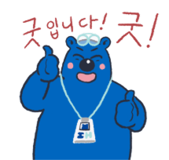

Thanks
- 일산병원 의료진을 만난 건 행운입니다 | 외과 강석민 교수님 저에게 활력을 주셨습니다 | 심장혈관흉부외과 배미경 교수님 눈물이 날 것 같아요 감사합니다. | 일산병원 의료진을 만난 건 행운입니다 | 외과 강석민 교수님 저에게 활력을 주셨습니다 | 심장혈관흉부외과 배미경 교수님 눈물이 날 것 같아요 감사합니다. | 일산병원 의료진을 만난 건 행운입니다 | 외과 강석민 교수님 저에게 활력을 주셨습니다 | 심장혈관흉부외과 배미경 교수님 눈물이 날 것 같아요 감사합니다. | 일산병원 의료진을 만난 건 행운입니다 | 외과 강석민 교수님 저에게 활력을 주셨습니다 | 심장혈관흉부외과 배미경 교수님 눈물이 날 것 같아요 감사합니다. | 일산병원 의료진을 만난 건 행운입니다 | 외과 강석민 교수님 저에게 활력을 주셨습니다 | 심장혈관흉부외과 배미경 교수님 눈물이 날 것 같아요 감사합니다. | 일산병원 의료진을 만난 건 행운입니다 | 외과 강석민 교수님 저에게 활력을 주셨습니다 | 심장혈관흉부외과 배미경 교수님 눈물이 날 것 같아요 감사합니다. | 일산병원 의료진을 만난 건 행운입니다 | 외과 강석민 교수님 저에게 활력을 주셨습니다 | 심장혈관흉부외과 배미경 교수님 눈물이 날 것 같아요 감사합니다. | 일산병원 의료진을 만난 건 행운입니다 | 외과 강석민 교수님 저에게 활력을 주셨습니다 | 심장혈관흉부외과 배미경 교수님 눈물이 날 것 같아요 감사합니다. | 일산병원 의료진을 만난 건 행운입니다 | 외과 강석민 교수님 저에게 활력을 주셨습니다 | 심장혈관흉부외과 배미경 교수님 눈물이 날 것 같아요 감사합니다. | 일산병원 의료진을 만난 건 행운입니다 | 외과 강석민 교수님 저에게 활력을 주셨습니다 | 심장혈관흉부외과 배미경 교수님 눈물이 날 것 같아요 감사합니다. | 일산병원 의료진을 만난 건 행운입니다 | 외과 강석민 교수님 저에게 활력을 주셨습니다 | 심장혈관흉부외과 배미경 교수님 눈물이 날 것 같아요 감사합니다. | 일산병원 의료진을 만난 건 행운입니다 | 외과 강석민 교수님 저에게 활력을 주셨습니다 | 심장혈관흉부외과 배미경 교수님 눈물이 날 것 같아요 감사합니다. | 일산병원 의료진을 만난 건 행운입니다 | 외과 강석민 교수님 저에게 활력을 주셨습니다 | 심장혈관흉부외과 배미경 교수님 눈물이 날 것 같아요 감사합니다. | 일산병원 의료진을 만난 건 행운입니다 | 외과 강석민 교수님 저에게 활력을 주셨습니다 | 심장혈관흉부외과 배미경 교수님 눈물이 날 것 같아요 감사합니다. | 일산병원 의료진을 만난 건 행운입니다 | 외과 강석민 교수님 저에게 활력을 주셨습니다 | 심장혈관흉부외과 배미경 교수님 눈물이 날 것 같아요 감사합니다. | 일산병원 의료진을 만난 건 행운입니다 | 외과 강석민 교수님 저에게 활력을 주셨습니다 | 심장혈관흉부외과 배미경 교수님 눈물이 날 것 같아요 감사합니다. |
